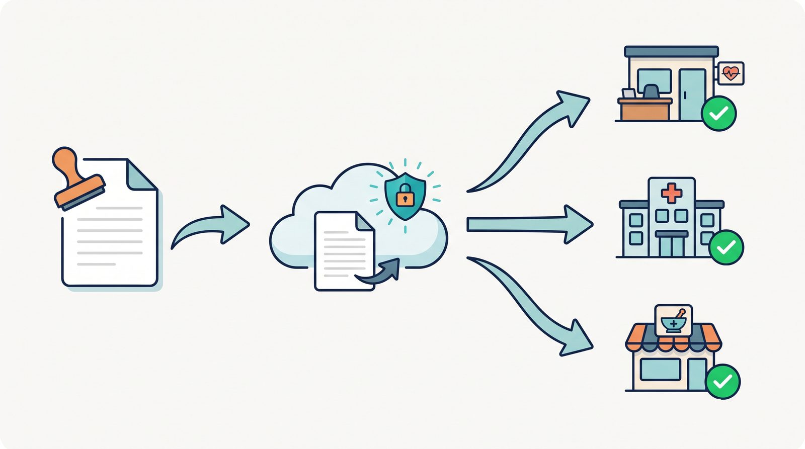

紙の郵送から、メールでの配信へ
在宅医療のクリニックは、ケアマネージャー・訪問看護ステーション・薬局など多くの連携先と定期的に書類をやりとりしています。居宅療養管理指導書、訪問看護指示書など、毎月かなりの量の書類を送付する必要があります。
以前はこれらをすべて紙で印刷 → 封筒に入れ → 切手を貼って郵送していました。印刷代・封筒代・切手代に加え、封入作業の人件費も無視できません。そして何より、送付漏れのリスクが常にありました。
「メールで送ればいいのに」— 単純な発想ですが、連携先のメールアドレスの管理、重複チェック、配信履歴の記録をすべて仕組みとして整えるのがこのプロジェクトです。書類の内容そのものの確定は人が行い、送付の手間を仕組みが引き受けます。

「郵送していた書類がメール1通で届く。連携先からも"紙より早くて助かる"と好評」
おひさま会が自院で内製し、運用している実例をもとに、考え方や進め方をお伝えします。まずは手順書を読むだけでも構いません。